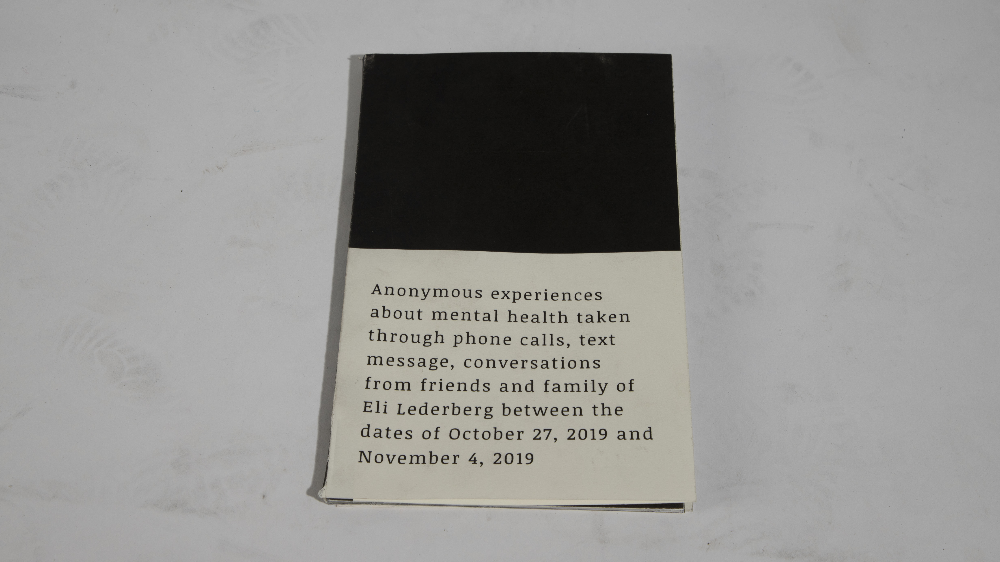

THE DIFFICULTY
WITH SHARING
WITH SHARING
While the awareness and acceptance for mental health and mental health has increased substantially over the past couple of years,
individuals dealing with severe cases of these issues are often overlooked,
or seen as too overwhelming or intense.
The Difficulty with Sharing was designed in response to this.
Filled with eight anonymous first person accounts of severe mental illness,
the zine is intended to help bring awareness to these more intense and undiscussed experiences.
